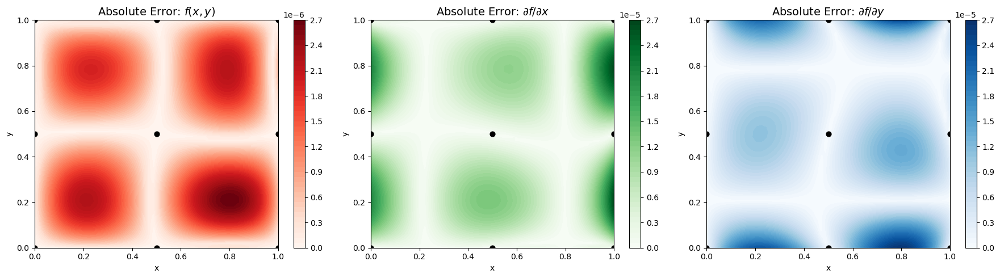

Sparse Derivative-Enhanced Gaussian Process (Sparse DEGP)#
Overview#
The Sparse Derivative-Enhanced Gaussian Process (Sparse DEGP) extends the standard DEGP by using a sparse Cholesky (Vecchia) approximation for the kernel matrix inverse during hyperparameter optimization. This enables efficient training on larger datasets where dense Cholesky factorization becomes prohibitively expensive.
Key features:
Uses sparse Cholesky decomposition based on the Vecchia approximation for scalable training
Applies maximin distance (MMD) ordering of training points for optimal sparsity patterns
Prediction uses exact dense Cholesky for accuracy
Controlled by the
rhoparameter, which determines neighborhood size and approximation qualityOptional supernode aggregation for further speedup via
use_supernodes
The sparse DEGP is a drop-in replacement for the dense DEGP, requiring only two additional parameters: rho and use_supernodes.
—
Example 1: 2D First-Order Derivatives with Sparse Cholesky#
Overview#
Learn a 2D function \(f(x,y) = \sin(x)\cos(y)\) using function values and first derivatives with respect to \(x\) and \(y\), with sparse Cholesky for efficient hyperparameter optimization.
—
Step 1: Import required packages#
import numpy as np
from jetgp.full_degp_sparse.degp import degp
import matplotlib.pyplot as plt
print("Modules imported successfully.")
Modules imported successfully.
Explanation:
We import the sparse DEGP from full_degp_sparse instead of full_degp. The API is identical except for the additional sparse parameters.
—
Step 2: Define training data#
X1 = np.array([0.0, 0.5, 1.0])
X2 = np.array([0.0, 0.5, 1.0])
X1_grid, X2_grid = np.meshgrid(X1, X2)
X_train = np.column_stack([X1_grid.flatten(), X2_grid.flatten()])
y_func = np.sin(X_train[:,0]) * np.cos(X_train[:,1])
y_deriv_x = np.cos(X_train[:,0]) * np.cos(X_train[:,1])
y_deriv_y = -np.sin(X_train[:,0]) * np.sin(X_train[:,1])
y_train = [y_func.reshape(-1,1), y_deriv_x.reshape(-1,1), y_deriv_y.reshape(-1,1)]
print("X_train shape:", X_train.shape)
print("y_train shapes:", [v.shape for v in y_train])
X_train shape: (9, 2)
y_train shapes: [(9, 1), (9, 1), (9, 1)]
Explanation: We define a 3x3 2D grid. Function values and first derivatives in both dimensions are included. This is identical to the dense DEGP setup.
—
Step 3: Define derivative indices and locations#
der_indices = [[[[1, 1]], [[2, 1]]]]
# All derivatives at all training points
derivative_locations = []
for i in range(len(der_indices)):
for j in range(len(der_indices[i])):
derivative_locations.append([k for k in range(len(X_train))])
print("der_indices:", der_indices)
print("derivative_locations:", derivative_locations)
der_indices: [[[[1, 1]], [[2, 1]]]]
derivative_locations: [[0, 1, 2, 3, 4, 5, 6, 7, 8], [0, 1, 2, 3, 4, 5, 6, 7, 8]]
Explanation:
The derivative indices specify first derivatives with respect to \(x\) ([[1,1]]) and \(y\) ([[2,1]]). derivative_locations indicates both partial derivatives are available at all 9 training points.
—
Step 4: Initialize Sparse DEGP model#
model = degp(X_train, y_train, n_order=1, n_bases=2,
der_indices=der_indices,
derivative_locations=derivative_locations,
normalize=True,
kernel="SE", kernel_type="anisotropic",
rho=1.0, use_supernodes=False)
print("Sparse DEGP model initialized.")
Sparse DEGP model initialized.
Explanation: The sparse DEGP model is initialized with two additional parameters compared to the dense version:
rho=1.0: Controls the neighborhood size for the Vecchia approximation. Each column of the sparse Cholesky factor conditions on therhonearest neighbors (in MMD ordering). Larger values increase accuracy but reduce sparsity.use_supernodes= False: Enables supernode aggregation, which groups nearby points for batched computation, providing significant speedup.
All other parameters (n_order, n_bases, kernel, etc.) are identical to the dense DEGP.
—
Step 5: Optimize hyperparameters#
params = model.optimize_hyperparameters(
optimizer='pso',
pop_size=100,
n_generations=15,
local_opt_every=15,
debug=False
)
print("Optimized hyperparameters:", params)
Stopping: maximum iterations reached --> 15
Optimized hyperparameters: [ -0.67212782 -0.73379968 0.67394394 -12.0401799 ]
Explanation: Hyperparameter optimization proceeds identically to the dense version. The sparse Cholesky approximation is used internally to compute the negative log marginal likelihood and its gradient, making each evaluation faster for large datasets.
—
Step 6: Validate predictions at training points#
y_train_pred = model.predict(X_train, params, calc_cov=False, return_deriv=True)
# Output shape is [n_derivatives + 1, n_points]
# Row 0: function, Row 1: df/dx, Row 2: df/dy
y_func_pred = y_train_pred[0, :]
y_deriv_x_pred = y_train_pred[1, :]
y_deriv_y_pred = y_train_pred[2, :]
abs_error_func = np.abs(y_func_pred.flatten() - y_func)
abs_error_dx = np.abs(y_deriv_x_pred.flatten() - y_deriv_x)
abs_error_dy = np.abs(y_deriv_y_pred.flatten() - y_deriv_y)
print("Max absolute error (function):", np.max(abs_error_func))
print("Max absolute error (deriv x):", np.max(abs_error_dx))
print("Max absolute error (deriv y):", np.max(abs_error_dy))
Max absolute error (function): 2.363124140813966e-10
Max absolute error (deriv x): 3.20923287944197e-11
Max absolute error (deriv y): 4.420852572906142e-11
Explanation: Predictions use exact dense Cholesky factorization (not the sparse approximation), so interpolation accuracy at training points should match the dense DEGP to machine precision.
—
Step 7: Visualize predictions#
x1_test = np.linspace(0, 1, 50)
x2_test = np.linspace(0, 1, 50)
X1_test, X2_test = np.meshgrid(x1_test, x2_test)
X_test = np.column_stack([X1_test.flatten(), X2_test.flatten()])
y_test_pred = model.predict(X_test, params, calc_cov=False, return_deriv=True)
# Row 0: function, Row 1: df/dx, Row 2: df/dy
y_func_test = y_test_pred[0, :].reshape(50, 50)
y_deriv_x_test = y_test_pred[1, :].reshape(50, 50)
y_deriv_y_test = y_test_pred[2, :].reshape(50, 50)
# Compute absolute errors
abs_error_func = np.abs(y_func_test - (np.sin(X1_test) * np.cos(X2_test)))
abs_error_dx = np.abs(y_deriv_x_test - (np.cos(X1_test) * np.cos(X2_test)))
abs_error_dy = np.abs(y_deriv_y_test - (-np.sin(X1_test) * np.sin(X2_test)))
# Setup figure
fig, axs = plt.subplots(1, 3, figsize=(18, 5))
titles = [
r'Absolute Error: $f(x,y)$',
r'Absolute Error: $\partial f / \partial x$',
r'Absolute Error: $\partial f / \partial y$'
]
errors = [abs_error_func, abs_error_dx, abs_error_dy]
cmaps = ['Reds', 'Greens', 'Blues']
for ax, err, title, cmap in zip(axs, errors, titles, cmaps):
cs = ax.contourf(X1_test, X2_test, err, levels=50, cmap=cmap)
ax.scatter(X_train[:,0], X_train[:,1], c='k', s=40)
ax.set_title(title, fontsize=14)
ax.set_xlabel('x')
ax.set_ylabel('y')
fig.colorbar(cs, ax=ax)
plt.tight_layout()
plt.show()

Explanation: The contour plots show absolute errors for the function and its first derivatives over a 50x50 test grid. Since predictions use exact dense Cholesky, accuracy should be comparable to the dense DEGP.
—
Summary#
This example demonstrates the Sparse DEGP as a drop-in replacement for the dense DEGP:
Same API: Only
rhoanduse_supernodesare added to the constructorSame predictions: Prediction uses exact dense Cholesky for full accuracy
Faster training: Sparse Cholesky approximation accelerates hyperparameter optimization
Scalable: The speedup grows with dataset size, making large-scale DEGP practical
Sparse Cholesky Parameters: